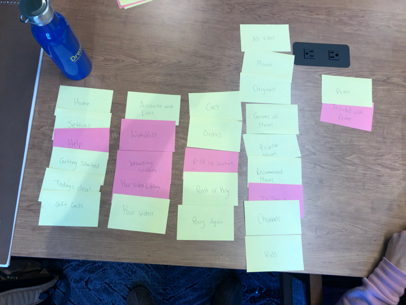

Social Media.
kdolphin2284


Amazon video is a popular subscription service that consists of popular movies and shows, as well as “amazon original” shows and movies.
I chose to redesign amazon video because of the cluttered homepage. The homepage consists of lists of movies and shows, as well as plenty of drop down menus. The whole idea of having the homepage be a list of movies, rather than an organized space that allows the user to get to where they want to go easily and with little thought boggled me. Getting into the redesign, the first step was to see what ideas should stay, and how should they be organized. To figure this out, I did a “card sorting” exercise with people I found around my campus.
This “card sorting” exercise consisted of note cards which had one clickable option from amazon video written on each card. I had 4 different people organize these cards into categories that they thought made sense. Once they had organized the cards, I asked them questions such as “Why did you place this card here?” or “Do you think that these could be organized differently?” to understand their thought processes. After this, I created a site map for how the navigation on the redesign should be by averaging their organization choices.
Once I had created a site map, the next step was to take this information and form wireframes to get a loose layout of how the redesign should look.
Once I created these wireframes of the two pages I was redesigning, I sought feedback from my professor, who said how everything shouldn’t be as “boxy” as it is at the moment. He also made a suggestion about the navigation bar and how I should keep that at the top rather than splitting it up into 3 sections as shown above. With this insight into design, I turned my wireframes into actual website designs with color and text.
My final designs consisted of three pages, instead of the original two that I was planning to make. The first 2 pages show the homepage, with the second page showing how the dropdown menus looked. The third page shows the movies page, while the fourth page shows the popular movies page. Instead of making the layout consist of rows of boxes, I only had 3 clickable options except for the navigation menus, which may have been boxes, but I spaced them out to give it a more open feel.
I ended up taking the advice that my professor gave me and had the navigation bar stay as an actual bar that was universal and simplified the drop-down menus to only two. I had the options in the menus be different colors to add variation in what the viewer sees. Lastly, I added an option to click on one of the “daily deals” on the homepage and by doing this a pop-up would appear with the description of the movie, as well as the price to buy and rent it.